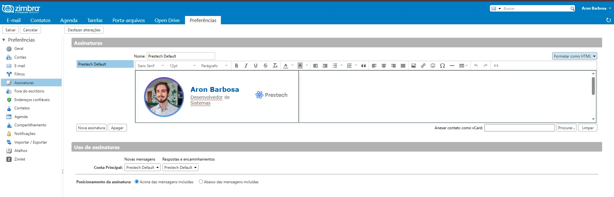
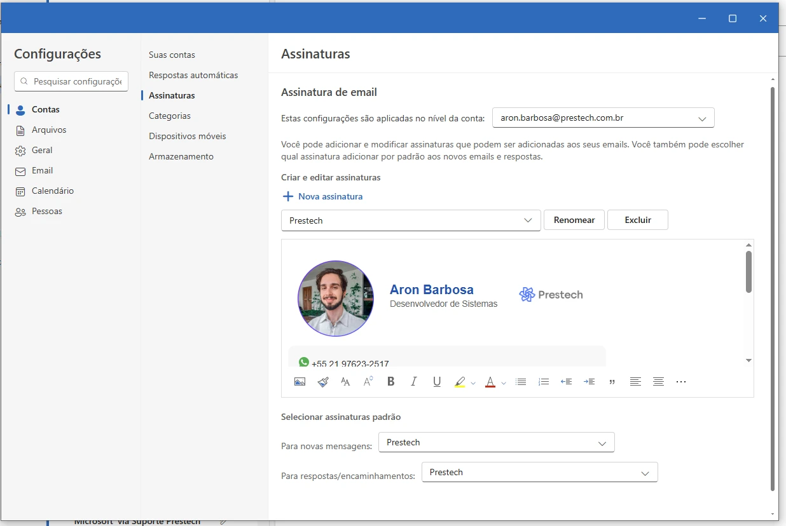
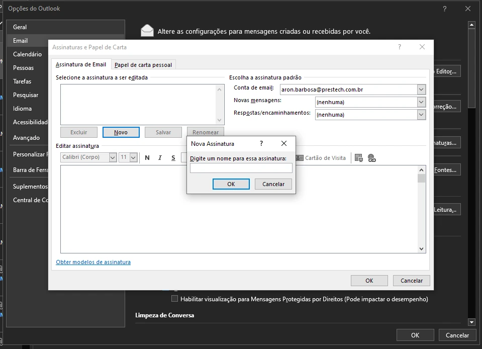

Este guia foi criado para ajudar
todos os membros da equipe da Nova Prestech a atualizarem suas assinaturas no
Gmail e no
Outlook.
Como copiar a assinatura
Para usar sua assinatura:
Abra o arquivo .html enviado utilizando seu navegador de preferência (ex.: Google Chrome)
Clique em qualquer área em branco da página para ativar o foco na janela
Segurando o botão esquerdo do mouse, arraste para selecionar todo o conteúdo da página (ou Pressione Ctrl + A);
No campo de assinatura do seu e-mail, pressione Ctrl +
V ou use o menu de contexto para Colar.
Zimbra
Para atualizar sua assinatura no Zimbra Web Client:
Faça login na sua conta Zimbra Webmail
Na Barra superior de menus, clique em "Preferências"
Clique no ícone de Assinaturas (📝) na Barra lateral esquerda
Na seção principal de Assinaturas, Escreva um Nome para a sua nova assinatura, no campo correspondente, localizado no início do formulário aberto
Após definir o nome, clique no Seletor de Formatação e escolha Formatar como HTML
a. Para Imagens:
Clique no ícone de Inserir Imagens;
Clique no botão "Escolher arquivo" para ativar o seu Gerenciador de arquivos;
Navegue até o local onde a imagem está armazenada e selecione-a, clicando duas vezes na mesma ou apertando Enter após um clique;
Após isso, aperte no botão de Ok, na parte inferior direita da janela modal aberta pelo Zimbra;
Caso seja questionado sobre A existência do arquivo no servidor, clique no check circular para Novo e prossiga com Ok novamente;
Você pode Redimensionar a imagem clicando na mesma e depois arrastando o mouse (com o botão esquerdo pressionado) ao clicar em um dos pequenos quadrados que aparecerão nas arestas do retângulo da imagem;
b. Para HTML puro: (Não recomendado mais!!) Cole o conteúdo na área de texto maior (use Ctrl + V ou o Botão direito do Mouse > Colar)
Na seção de Uso de assinaturas, clique no Campo de Seletor com rótulo de Novas mensagens e escolha o nome da nova assinatura
Clique no Campo de Seletor com rótulo de Respostas e encaminhamentos e escolha o nome da nova assinatura
Na Barra lateral esquerda, clique em "Salvar", no canto superior esquerdo

Exemplo da seção de assinaturas no Zimbra.
Outlook Web
Para atualizar sua assinatura no
Outlook Web ou Outlook Desktop 2024+:
Clique na engrenagem (⚙️) no canto superior direito.
Selecione
"Conta", seguido de "Assinaturas".
Caso tenha outras assinaturas, clique em + Nova assinatura.
Dê um nome-rótulo para sua assinatura, escrevendo no campo inicialmente com Editar Nome da Assinatura
a. Para Imagens (Outlook moderno):
Abra Configurações (ícone de engrenagem) → Email → Redigir e responder (Compose and reply);
Crie ou selecione a assinatura e posicione o cursor no editor;
Clique no ícone de Imagem (Insert image) ou arraste e solte a imagem no editor;
No seletor de arquivos, escolha a imagem e clique em Abrir (ela será inserida inline);
Para redimensionar, clique na imagem e arraste as alças dos cantos;
Clique em Salvar na seção de assinaturas para aplicar as alterações.
b. Para HTML puro:
(Não recomendado!)
Cole o HTML diretamente no editor de assinaturas
(use
Ctrl +
V).
Dicas:
Prefira CSS inline; o Outlook moderno pode descartar <style> e scripts;
Imagens remotas devem usar URL HTTPS pública ou ser inseridas via upload;
Evite fontes web externas; use fontes seguras do sistema.
Após salvar, lembre de atualizar os campos de Seleção (Para novas mensagens) e (Para respostas/encaminhamentos), logo abaixo de onde incluiu a assinatura, escolhendo o rótulo do nome

Tela de edição de assinatura no Outlook Web.
Outlook Desktop
Para atualizar sua assinatura no
Outlook Desktop:
Versão 2024 ou superior
Confira o passo-a-passo para o Outlook Web!
Versões Anteriores
Clique em "Arquivo", no canto esquerdo da barra superior horizontal de opções.
No Painel aberto, procure o botão de "Opções", no canto inferior esquerdo.
Na Janela Flutuante aberta, clique em Email, no canto superior esquerdo.
Na divisória principal carregada, agora procure pelo botão de "Assinaturas..."
a. Para Imagens:
No editor de assinaturas, posicione o cursor onde deseja inserir a imagem;
Clique no ícone de Inserir Imagem, na barra de ferramentas;
No diálogo que aparecer, navegue até a imagem desejada e selecione-a;
Clique em Inserir para adicionar a imagem à assinatura;
Você pode Redimensionar a imagem clicando nela e arrastando os cantos com o mouse;
Clique em OK para salvar as alterações na assinatura.
b. Para HTML puro: (Não recomendado!) Cole o conteúdo HTML diretamente no editor de assinaturas (use Ctrl + V)

Janela do formulário do Outlook Clássico para Assinaturas.
Gmail
Para atualizar sua assinatura no
Gmail:
Clique na engrenagem no canto superior e selecione
"Ver todas as configurações".
Na aba Geral, role até Assinatura.
Clique em "Criar nova", dê um nome e cole sua
assinatura.